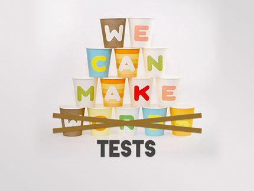

Testea!
Hemos hablado de cuidar detalles, de reusar... Para que todo eso pase vamos a dedicar un montón de tiempo, así que qué mejor que redondear todo nuestro trabajo haciendo unos tests para garantizar que un pequeño cambio no va a provocar que algo deje de funcionar.
Existen frameworks para realizar tests a nuestro código javascript. Entre otros:
La principal barrera que te puedes encontrar cuando quieres iniciarte en tus primeros tests es el cambio de mentalidad que exigen, sobre todo cuando vamos a testar funciones muy visuales. La sensación de no saber por dónde empezar es un poquito agobiante, pero una vez roto el hielo lo demás es más facilito.
Mis combos favorito para testar son JsUnitTest + jShoulda o JsUnitTest + SugarTest.